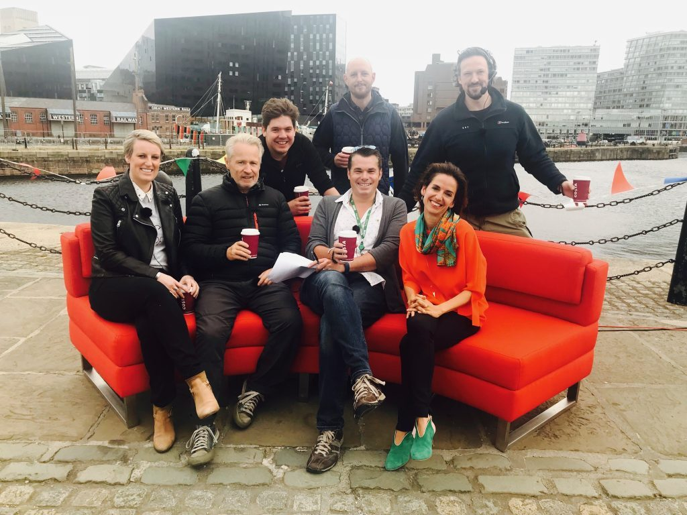

Media
In the media
Interviews and commentary on the Olympic Games, the European Capitals of Culture and what culture does for cities, in four languages.

Highlights
Newest first
2026Elle Italia“The Capitals of Culture are no longer what they used to be”
2025The New York TimesAs Los Angeles Olympics loom, critics worry its cultural plan is laggingRead the story ↗
2018BBC BreakfastLiverpool's Capital of Culture legacy, ten years on
2012BBC News at TenThe London 2012 Cultural Olympiad
2012The Guardian“How should universities contribute to the legacy?”
2010The Guardian“Liverpool profited from year as capital of culture, says report”
2009The TimesLiverpool after its year as European Capital of Culture
2009El PaísLessons for Spain's 2016 Capital of Culture candidates
2008The Wall Street Journal“The next Barcelona”: Liverpool 2008
2008New Statesman“Liverpool 08: the story so far”
2003BBC Radio 4, Thinking AllowedThe legacy of Glasgow 1990, and lessons for Liverpool 2008
2000The Sydney Morning HeraldThe Sydney 2000 Olympic Arts Festival
Press articles by Beatriz
- 2025–Euphoric Cities, her essays on Substack
- 2021Giant inflatables and flying dancers: Olympic art has always turned heads. The Conversation
- 2021Why festivals and special events matter now more than ever. UKRI
- 2020Olympics postponement may be a cultural opportunity for Tokyo. The Conversation
- 2020The future of mega-events, and festivals' crucial role. Salzburg Global Seminar
- 2020When the Games can't go on. Arts Professional
- 2017Why Brexit should not stop UK cities from competing for European Capital of Culture. The Conversation
Broadcast
BBC One · BBC News · BBC Radio 4 · Sky Arts · Deutsche Welle · European Parliament TV · national television in Spain, France, Chile, Panama, Slovakia and South Korea
Available to comment on
- The LA28 and Brisbane 2032 Cultural Olympiads
- European Capitals of Culture: bids, programmes and legacies
- City cultural strategy and placemaking
- Festivals and major events
- How to measure the value of culture
In English, Spanish, Catalan and French.
Press kit
Approved bios in four lengths, high-resolution photos and a one-page fact sheet.